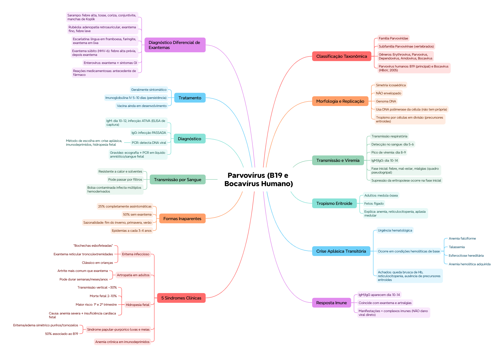

Parvovírus humanos de interesse:Parvovírus B19 (responsável pela maioria das manifestações clínicas relevantes) e Bocavírus humano (HBoV), descrito em 2005.
📌 O que o professor cobra nesta seção: os parvovírus são vírus PEQUENOS e NÃO envelopados, com grande impacto clínico em hematologia, pediatria, obstetrícia e medicina interna — isso já entrega o "mapa" do resto do capítulo.
🧬 Morfologia, estrutura e replicação
Simetria icosaédrica
Não envelopado
Genoma: DNA
Utiliza a DNA polimerase celular (não tem a própria)
Tropismo por células em divisão, especialmente as precursoras eritroides
🟢 Essa é a chave de todo o capítulo: o tropismo pelas células precursoras eritroides (em divisão ativa) explica praticamente TODAS as manifestações hematológicas do B19 — desde a anemia até a crise aplásica e a hidropesia fetal.
⏱️ Transmissão e linha do tempo da viremia
Transmissão: via respiratória.
Evento
Tempo
Detecção na sangue
Dia 5-6 pós-contato
Pico de viremia
Dia 8-9
Aparecimento de IgM/IgG
Dia 10-14
Fase inicial (durante a viremia): febre, mal-estar geral, mialgias, quadro pseudogripal. É NESSA fase que ocorre a supressão da eritropoiese.
🩸 Tropismo eritroide — a base fisiopatológica
O B19 infecta os precursores eritroides:
Em adultos: medula óssea
Em fetos: fígado
💭 Isso explica diretamente 3 achados: anemia, reticulocitopenia e aplasia medular — todos consequência direta da infecção dos precursores eritroides que estão se dividindo ativamente.
Ocorre em pacientes com condições hemolíticas de base:
Anemia falciforme
Talassemia
Esferocitose hereditária
Anemia hemolítica adquirida
Achados: queda brusca de Hb, reticulocitopenia, ausência de precursores eritroides.
🏥 É uma urgência hematológica — pacientes com anemias hemolíticas crônicas dependem de uma produção eritroide constantemente acelerada pra compensar a hemólise; se o B19 "desliga" temporariamente essa produção, a Hb despenca rapidamente.
🧪 Resposta imune — o mecanismo das manifestações
IgM e IgG aparecem entre 10-14 dias, coincidindo com o exantema e as artralgias.
🟢 Ponto crucial: as manifestações clínicas (exantema, artralgias) se devem a complexos imunes — NÃO ao dano viral direto. É uma reação do sistema imune do hospedeiro, não uma lesão causada diretamente pelo vírus.
🌸 As 5 síndromes clínicas do Parvovírus B19
1. Eritema infeccioso
"Bochechas esbofeteadas" (face avermelhada), exantema maculopapular reticular no tronco e extremidades. É a apresentação clássica em crianças.
2. Artropatia em adultos
Artralgias persistentes, podendo durar semanas, meses ou anos. Em adultos, a artrite é mais comum que o exantema — inverso do padrão infantil.
3. Hidropesia fetal
Parâmetro
Valor
Transmissão vertical
~30%
Risco de morte fetal
2-10%
Maior risco
1º e 2º trimestre
Causa: anemia severa + insuficiência cardíaca fetal. O feto não consegue compensar a supressão eritroide.
4. Síndrome papular-purpúrico em luvas e meias
Eritema e edema simétrico em punhos e tornozelos, também afetando bochechas, axilas, virilha e genitais. 50% dos casos se associam ao Parvovírus B19.
5. Anemia crônica em imunodeprimidos
Mencionada como uma das manifestações associadas ao tropismo hematológico marcado do vírus.
🤫 Formas inaparentes e sazonalidade
25% das infecções são completamente assintomáticas
50% ocorrem sem exantema
💡 Isso facilita a disseminação silenciosa — mais da metade das pessoas infectadas nem sequer apresenta o sinal clínico "clássico" (exantema).
Sazonalidade: final do inverno, primavera e verão. Epidemias a cada 3-4 anos — coincidindo surtos de eritema infeccioso e crise aplásica.
🩸 Transmissão por sangue
Resistente ao calor e a solventes
Pode passar por filtros
Uma bolsa contaminada pode infectar múltiplos hemoderivados
🔬 Diagnóstico laboratorial
Método
Detalhe
IgM
Aparece dia 10-12. Indica infecção ATIVA. Método: ELISA de captura
IgG
Indica infecção PASSADA. Útil em estudos epidemiológicos
PCR
Detecta DNA viral. Prova de escolha em: crise aplásica, imunodeprimidos, hidropesia fetal
🏥 Na gravidez: ecografia (pra detectar hidropesia) + PCR em líquido amniótico ou sangue fetal.
💊 Tratamento e vacina
Manejo: geralmente sintomático. Em persistência: imunoglobulina IV por 5-10 dias.
Vacina: ainda em desenvolvimento — não disponível atualmente.
🔍 Diagnóstico diferencial dos exantemas infecciosos
Doença
Características-chave
Sarampo
Febre alta, tosse, coriza, conjuntivite, manchas de Koplik
Achar que o exantema é causado pelo próprio vírus atacando a pele — na verdade é uma reação imunológica (complexos imunes), que aparece só quando IgM/IgG surgem (dia 10-14).
⚡ Questão rápida
Por que a crise aplásica transitória é considerada uma urgência hematológica em pacientes com anemia falciforme?
Porque esses pacientes já dependem de uma produção eritroide compensatória acelerada pra manter a Hb num nível viável, dada a hemólise crônica de base. Se o B19 suprime temporariamente essa produção (infectando os precursores eritroides), a Hb cai bruscamente sem nenhuma compensação, podendo levar rapidamente a anemia grave sintomática.
🧠 Autoexplicação
Por que faz sentido que, em adultos, a artrite seja mais comum que o exantema (padrão oposto ao das crianças, onde o exantema — eritema infeccioso — é a apresentação clássica)?
Como as manifestações clínicas do B19 (tanto exantema quanto artralgia) são causadas por complexos imunes formados durante a resposta imune do hospedeiro — não por dano viral direto — a diferença de apresentação entre crianças e adultos provavelmente reflete diferenças na maturidade e no padrão de resposta imunológica entre esses grupos. Sistemas imunes adultos, mais "experientes" e com respostas potencialmente mais robustas ou diferentemente direcionadas, parecem favorecer a deposição desses complexos imunes em articulações (gerando artrite), enquanto o sistema imune infantil, ainda em desenvolvimento, favorece mais a manifestação cutânea clássica (o eritema infeccioso). Isso reforça o princípio central do capítulo: a apresentação clínica do B19 depende mais de COMO o hospedeiro reage ao vírus do que de qualquer variação no próprio vírus.
⚠️ Onde todo mundo escorrega
Achar que o exantema é causado por dano viral direto — é causado por complexos imunes
Esquecer que em ADULTOS a artrite é mais comum que o exantema (padrão oposto ao infantil)
Confundir os tempos da linha do tempo: detecção no sangue (dia 5-6), pico de viremia (dia 8-9), IgM/exantema (dia 10-14)
Achar que a infecção é sempre sintomática — 25% são completamente assintomáticas, 50% sem exantema
Esquecer que na gravidez o maior risco de hidropesia é no 1º e 2º trimestre, não no 3º
📚 Se você só puder lembrar de 7 coisas
Parvovírus B19: DNA, não envelopado, tropismo por precursores eritroides em divisão
Linha do tempo: detecção no sangue dia 5-6, pico de viremia dia 8-9, IgM/exantema dia 10-14
Exantema/artralgia = complexos imunes, NÃO dano viral direto
Crise aplásica transitória = urgência hematológica em anemias hemolíticas de base
Hidropesia fetal: maior risco no 1º/2º trimestre, mortalidade fetal 2-10%
Crianças: eritema infeccioso (exantema). Adultos: artrite mais comum que exantema
PCR = método de escolha em crise aplásica, imunodeprimidos e hidropesia fetal
🩺 Caso Clínico Progressivo — Anemia Falciforme e Queda de Hemoglobina
Vamos acompanhar Kauê, 9 anos, com anemia falciforme, que chega ao PS com palidez intensa e fraqueza súbita. O caso evolui em 3 níveis — clica em cada um pra ver como as coisas vão se desenrolando.
🧠 Mapa Mental — Parvovírus (B19 e Bocavírus Humano)
Visão geral do capítulo em formato visual — ideal pra revisão rápida antes da prova. O conteúdo completo, com explicações e exemplos, está no Guia de Estudo.

🃏 Flashcards — SM-2 real + interface Anki
O sistema guarda, no seu navegador, quais cards você já sabe bem e quais precisam voltar mais cedo — cada vez que você avalia um card, ele recalcula quando ele deve voltar.
Cartão 1 / 0Dominados: 0
PERGUNTA
RESPOSTA
✅ Banco de Questões Comentadas
10 questões, do mais básico ao mais puxado. Escolhe uma alternativa, depois clica em "Ver comentário completo" — vale a pena ler até quando você acerta, porque o comentário explica cada alternativa, não só a certa.